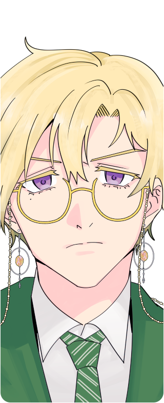
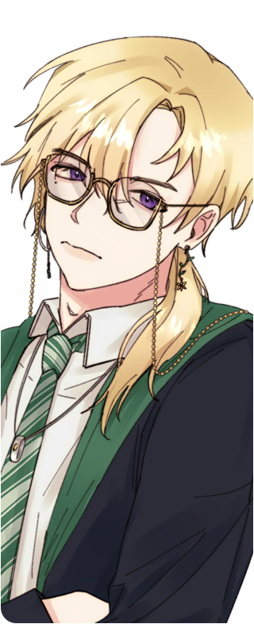
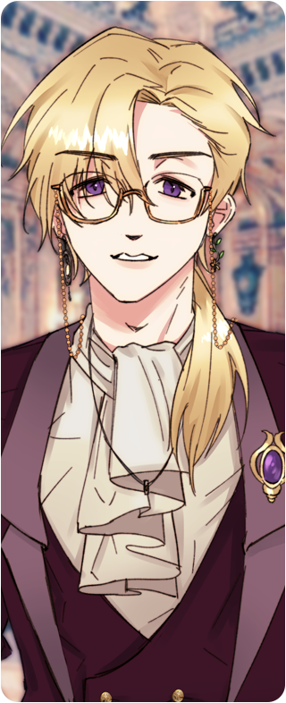
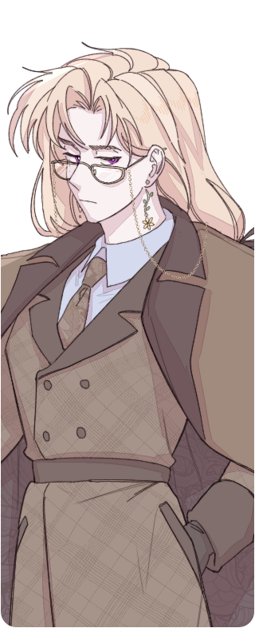
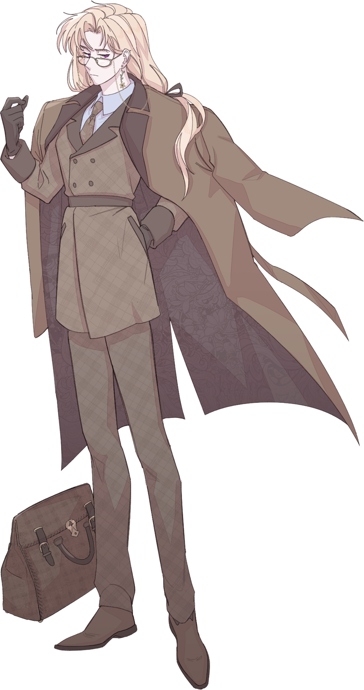

Nuadha Airgeadlámh Nocturne
누아다 아르게틀람 녹턴





[ 단언컨대 퇴락하는 태양은 없다. ]
“ 내가 반지성적 판단을 내릴 리가 있나? ”
나이
27세
기숙사
슬리데린
“완벽한 인간이 되겠다니, 야망도 크지.”
진영
불사조 기사단
직업
탐정
국적
아일랜드인
혈통
순수 혈통
키/무게
186cm/75kg
성별
시스젠더 남성
지팡이
백향목/불사조의 깃털/12인치/뻣뻣함
성격
# 공적인 이상주의
공공연하게 드러난 대외적인 누아다 녹턴은 물론 녹턴 가주이자 더블린 탐정사무소를 운영하는 탐정이다. 아일랜드 마법사 사회의 치안 유지에 이바지해 온 녹턴 가문의 후계자이며, 천재적 탐정이었던 달바흐 녹턴의 자제이자 명실상부 새롭게 떠오르는 더블린의 명탐정이다. 그런 그가 공적으로 내세우는 정의관은 물론 칼 같은 이상주의다. 그는 여전히, 올곧게, 똑바로 하나의 태양을 바라보는 사람이다. 사회의 치안이 안정되기 위해서라면 전쟁이 가라앉아야 하고, 또 같은 전쟁을 되풀이하지 않기 위해 녹턴 가주로써 대외적으로 그가 내세워야 하는 정의는 단 하나, 차별 철폐일 수밖에 없다. 같은 차별이 되풀이되는 이상 전쟁은 되풀이되고 마법사 사회는 어지러울 것이며 녹턴이 지키고 추구해온 가치와 정의가 망가질 테니까. 기본적으로 그는 정의론자다. 인류가 보편적으로 약속한 도덕률을 신앙하고, 윤리와 철학으로서 사회를 구하고자 하며 그것을 스스로의 의무로 규정한. 기사단 내에서도 소위 ‘꼰대’란 말을 가끔 듣지만, 그 스스로는 기사단의 사상적 토대는 본질적으로 고리타분할 수밖에 없으니 자신의 꽉 막힌 정의관이 듣기에 쓰더라도 들으라 충고한다.
# 사적인 혈통주의
그도 인정한다. 거기서 자유로운 순수혈통은 없다. 전무하단 말이다. 나고 자란 사회가 마법사 사회이고, 아무리 열심히 노력해도 어려서부터 보고 배우고 은연 중에 몸에 배인 혈통주의적 사고를 완전히 벗기란 어려우며 가능하지도 않았다. 그는 여전히 때로 머글 혈통들을 의심하고, 녹턴과 그들 문명의 간격을 좁히고자 하진 않는다. 머글 여자와 결혼한 엘라하 스펜서를 녹턴 가문에서 파문한 일을 물릴 생각도 없다. 시혜적인 인물이라거나 위선적인 인물이라는 평가를 공공연히 받는데, 본인은 악을 행하느니 위선도 선이라 잘라 말한다. 설령 공적인 이상주의에 불과하더라도 하나라도 손이 부족한 기사단 입장에선 데려다 쓰는 게 이득일 거라는, 지극히 슬리데린적인 계산을 내놓기도 하고.
# 철저한 공사구분
기사단 내에서 가장 많이 듣는 말은 물론, “당신 같은 순수혈통 우월주의자가 기사단에 가문을 통째로 끌고 오다니 무슨 속셈이 있는 거 아니냐”는 의심이다. 물론 그러한 비난 아닌 비난에 누아다가 내놓은 간결한 대답은 “공사구분”이다. 엘라하가 머글 여자와 결혼해 가문과 갈등을 빚은 건 어디까지나 집안 문제다. 요컨대 누아다 녹턴이라는 개인이 고양이를 싫어한다고 해서 길거리에 나다니는 고양이를 학대하는 일이 정당해지거나, 해도 되는 정의로운 일이 되는 건 아니라는 말이다. 소위 “내가 머글을 싫어하는 것과 머글 태생들도 마법사 사회에서 밥 벌어먹고 살아야 한다는 문제가 무슨 상관이냐? 내가 싫어하는 놈들을 단지 내 마음에 안 든다는 이유만으로 일일이 인권 박탈을 하자면 머글 태생뿐만 아니라 영국 국적인 놈들부터 밥그릇을 잃어야 했을 것”이라는 것. 개인의 사적 감정을 사회정의라 우길 만큼 본인은 자의식 과잉이 아니라는 게 그의 지론이다. 아무리 외국인이 싫어 외국인 친구를 안 만들더라도 외국인의 일자리를 빼앗으면 안 되고, 옆나라가 마음에 안 들어도 옆나라를 침략해 식민지 삼으면 안 되는 것이다. 그게 반제국주의이며 상식이며 도덕이라는 것이다. 그 도덕률과 정의를 지켜온 게 녹턴 가문이고.
기타
● 300년 전 초대 탐정이었던 ‘다누 녹턴’이 아일랜드 더블린 일대의 마법사 사회를 뒤흔들었던 연쇄 살인 사건을 해결한 것을 계기로 오래도록 탐정 사무실을 대물려온, 이른바 탐정 가문이다. 가문 자체는 보통 초대 녹턴으로 불리는 다누 녹턴 이전부터 순수혈통이었던 것으로 알려져 있으며, 아일랜드 마법사 사회의 치안 유지에 기여해 온 것으로 유명하다. 방계 친척까지 모두 탐정을 하진 않지만, 탐정을 하지 않더라도 법의학자 및 약물 감정사, 오러, 프로파일러 등 대체로 치안에 연루된 일을 업으로 삼는 경우가 많다.
초대 녹턴은 활약은 더블린에서 하고, 탐정 사무실은 더블린보다는 시골인 리즈번에 두었으나 누아다의 조부가 가주이던 시절 편의를 위해 사무실을 이전하여 현재 녹턴 탐정 사무실은 아일랜드 더블린에 소재한다. 가업의 특성상 범죄자에게 가족의 신변이 노출되면 위험하기 때문에 녹턴 가문의 더블린 저택에는 다양한 보호 마법이 걸려 있으며 머글의 눈에 띄지 않음은 물론 같은 마법사라도 더블린 탐정 사무소를 방문하려면 부엉이를 통한 철저한 사전 예약이 필요하다.
● 다누 녹턴 이전부터 가문의 일원에게 아일랜드 켈트 신화에서 비롯한 이름을 지어주는 전통이 있었다. 아일랜드 마법사 가문 중에서도 조국에 대한 애국심 및 자부심이 투철한 것으로 유명하며, 해당 전통은 아직 깨어진 적이 없다. 그의 이름 ‘누아다 아르게틀람’ 또한 전통에 따라 붙여졌다. 이름의 의미는 켈트 신화 등장하는 신들의 왕, 다누의 혈족을 지키는 자, 이른바 ‘은빛 팔의 누아다’.
○ 가족으로는 돌아가신 부모님 달바흐 녹턴과 모리안 녹턴 부부, 그리고 가출한 이래 연락도 없는 동생 엘라하 스펜서와 제수씨인 메이 스펜서 부부, 조카 에이더스 스펜서.
● 녹턴 가문이 아이를 영국 호그와트에 입학시키기 시작한 것은 제법 근래의 일이다. 누아다의 조부모 대가 최초였으니 전통적으로 배정받았던 기숙사라고 할만한 것도 특기하기가 어렵다. 다만 누아다의 조부모 및 부모님 세대가 연달아 래번클로를 배정받은 전력은 있다.
가문이 대외적으로 혈통 차별에 관하여 공식 입장을 표명한 바는 없다. 까닭에 녹턴이 혈통 차별을 지지하느냐 지지하지 않느냐에 관하여 왈가왈부가 많았으나, 이는 근래 누아다 녹턴의 불사조 기사단 가담과 더불어 녹턴의 전쟁 참여로 불식되었다.
● 자신의 능력을 과신하는 면이 있어서 특히 참전으로 인한 전사를 고려하지 않는다. 27살에 죽을 일이 뭐가 있단 말인가? 실제로 학창 시절 성적이 좋았고, 살면서 아버지가 돌아가시고 동생이 가출한 것 등 가족사 외의 실패를 겪어본 적이 없어서 더 그렇다. 대놓고 안일한 순수 혈통, 다만 자신의 직업적 윤리는 공동체의 도덕과 맞닿아 있기 때문에 죽음을 먹는 자들의 사상에 동조하지 않는 것이다.
● 아주 오래 전부터 녹턴 저택에서 함께 한 집요정으로 베티가 있다. 어머니를 일찍 여의었던 까닭에 사실상 육아를 아버지와 베티가 도맡았다 보니 사실 이제는 거의 노모를 모시는 기분으로 베티와 지낸다. 나이가 들어도 일하고 싶다고 하니까 베티가 좋을대로 일하게 두지만 너무 무리하면 냅다 들어다가 쉬라고 앉혀 놓기도 한다.
● 학창 시절에 특히 아일랜드 국적이라는 이유로 영국 학생과 자주 충돌했고, 까닭에 영국에 관한 감정이 썩 좋지 않다. 그러나 그는 가출한 동생 엘라하의 소식을 수집하고 있었고 자신에게 조카가 태어났다는 사실 또한 알고 있었기 때문에 자신이 더는 영국과 무관한 사람이 아니게 되었다고 판단했다. 그다지 형제와 연을 다시 이을 생각은 없지만, 어린 조카는 죄가 없으니까.
○ 참전 사유 중엔 ‘아일랜드’로 전쟁이 번지기 전에 영국 선에서 막겠다는 지극히 이기적인 이유도 있었다. (….) 그에 관해 물어보면 “뭐? 당연히 박살이 나도 런던이 박살 나는 게 낫지, 나의 더블린은 안 돼.”라고 대답한다.
● 불면 증세는 여전하고, 커피 중독도 여전하다. 아버지 장례식 이후에 스트레스가 정말 크게 몰아쳐서 한 일주일을 못 자고 쓰러진 일이 있다. 그 이후에 든 습관이 자기 전에 술 한 잔 하는 거였는데, 그나마 술이라도 한잔 하면 잠이 왔었다고. 별로 좋은 처방은 아닌 데다가 술엔 아무래도 중독성이 있다 보니 어느 순간 마시는 양이 늘어서 근래엔 의도적으로 술을 줄이려고 노력하고 있다. 기본적으로 애주가고, 마시기 시작하면 정말 끝도 없이 들어간다. 주사랄 건 없고 그냥 엎어져 자는데, ‘취하면 엎어져 잔다’는 포인트가 결국 사람 하나를 애주가로 만들어 놓은 경우.
